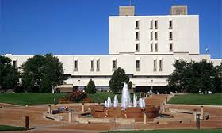

English Name: Colorado State University School Website www.colostate.edu School Introduction: Colorado State University was founded in 1870 and was named Colorado State University in 1957...
English name: Colorado State University
School website www.colostate.edu
School Introduction
Colorado State University, USA Colorado State University was founded in 1870 and was named Colorado State University in 1957, covering an area of 5,000 acres. In 2016, it was ranked 127th by USNEWS. Colorado State University is one of the most renowned public universities in the United States, with advanced teaching and research facilities and a strong faculty, leading the nation in infectious diseases, meteorology, clean energy technology, and environmental science. Research in atmospheric and aerospace fields has made Colorado State University's Major in Atmospheric Science Ranked first in the United States. Additionally, research in atmospheric radar detection has advanced human understanding of climate change, Weather forecast Research has made significant progress. The CSU-CHILL radar used for research purposes is a national radar device developed by the United States National Natural Science Foundation Sponsored and managed by Colorado State University (Department of Electronic Engineering). Mainly used for research in radar and remote sensing. It is also the most advanced radar equipment in the world for research in this field. Colorado State University has 8 Academic Schools, offering students courses across 55 disciplines and departments.

Geographical location
Colorado Colorado State University is located here Colorado Prefecture Colinsburg（Fort Collins,CO） Located at the foot of the Rocky Mountains, with beautiful scenery and close to the school Denver City 65 li. Colinsburg Many cultural activities are held here Colorado The focus is on students from state universities. Since many local residents are about the same age as university students, the city has very active music activity centers, and many acclaimed small breweries are also located here. There is one in the city center Old City The shopping district hosts various large-scale celebrations every year. Lincoln Center Yes Colinsburg The symphony orchestra's residence, Broadway Touring shows also frequently come here. Colinsburg Balloon festivals attract people from all over the world Hot air balloons Enthusiasts participate. Within the city Beer culture It is also well developed. In addition to the Anheuser-Busch brewery, which has been operating in the city since 1984, there are three microbreweries. There are also some breweries in the city. At the end of June, they are held in the city ColoradoBeer festival。 This festival is celebrated Old City The event was held, with participants coming from various sources Colorado The state has more than 45 breweries and nearly 30,000 people on average. Colinsburg The main venue is Lincoln Center, built in 1978, featuring a 1,180-seat hall, a 220-seat small hall, and four exhibition halls Outdoor sculpture and performance venues. Many local arts organizations have set up their headquarters in the establishment, including: Colinsburg Symphony orchestra, Colinsburg Opera troupe, etc. The center has wheelchair access for disabled people and an infrared sound system for assisting those with hearing impairments. Nearly 1,750 events are held here annually.

Professional curriculum offerings
Bachelor's degree
Literature (16)
Art History, English, Spanish, Music, Art, Drama, Dance, Interior Design, Verbal Communication, Studio Art, Communication Studies, Media Studies, Humanities Performing arts, language, literature and culture, journalism and technical media
Agronomy (14 areas)
Agricultural Economics、Zoology、Animal science forestry, agricultural and commercial management, Horticulture, encirclement Lin Architecture、Equidae Science, Agricultural education Environmental horticulture, plant health, fish, wildlife, and more Ecological protection Ranch ecology, crop and soil science
History (3 fields)
Art history, history, and ethnic studies
Science (18 topics)
Chemistry, Mathematics, Physics, Psychology, Geology, Biochemistry, Natural sciences、Biomedicine、Microbiology、Chemical and Biological Engineering Environmental hygiene, Biological sciences Natural resource management, watershed science, plant health, chemistry, biology, Biomedical engineering fish, wildlife and ecological protection, natural resource leisure and tourism
Economics (2 fields)
Economics, agricultural economics
Education (2 topics)
Health and exercise science, agricultural education
Management (7 topics)
Construction Management, Hotel Management, Agricultural and Commercial Management, Business Administration, Family and Consumer Science, Natural Resource Management, Apparel and Sales
Engineering (15 items)
Civil engineering, Computer engineering Environmental Engineering, Mechanical Engineering, Chemical and Biological Engineering, Electrical engineering, engineering science, environmental hygiene, interior design, Computer science Apparel and sales, applied grate technology, electronics and biomedical - laser and optics, mechanical and biomedical engineering, electronics and biomedical - electrical engineering
Philosophy (1)
Philosophy
Medicine (3)
Nutrition, biomedicine, nutrition, and Food Science
Law (7 topics)
International Studies, Anthropology, Sociology, Human Development and Family Studies, Political science Social Work, Family and Consumer Science
Literature (7)
English literature Master's degree, creative writing (Master of Fine Arts) Master of Music, Master of Arts in Literature and Arts, Master of Arts in Communication, Master of Language, Literature and Culture, Design and Advertising Marketing Master of Science
Agronomy (13 locations)
Master of Landscape Architecture, Agriculture and Resource Economics Master of Natural Resource Management, Bio-agriculture Master of Science in Science, Master of Science in Ecosystem Science, Agricultural science Master of Science in Agronomy, Master of Science in Zoology, Master of Science in Botany, Master of Science in Fish, Wildlife and Ecological Conservation, Master of Science in Forest Science, Master of Science in Horticulture, Master of Science in Crop and Soil Sciences, Master of Science in Zoology
History (2)
Master of Arts in History, Master of Arts in Ethnic Studies
Science (20 items)
Master of Science in Biological Agricultural Science, Master of Science in Bio-Ecological Science, Molecular Biology, Cell and Integrated Neuroscience, Master's degree in Natural Resources, Atmospheric Science Master of Science, Master of Science in Biochemistry, Master of Science in Biomedical Sciences, Cell and molecular biology Master of Science in Science, Master of Science in Ecology, Master of Science in Environmental Health, Master of Science in Fish, Wildlife and Ecological Conservation, Master of Science in Food Science and Nutrition, Earth Sciences Master of Science, Master of Science in Human Factors - Natural Resources, Master of Science in Mathematics, Master of Science in Microbiology, Master of Science in Physics, Master of Science in Psychology, Master of Science in Statistics, Master of Science in Watershed Science
Economics (3 topics)
Agriculture and Resource Economics, Applied statistics Master's degree, Master of Arts in Economics
Education (5 topics)
Master of Education and Human Resources Studies, Master of Management Practice, Natural sciencesMaster of Education Master of Science in Health and Exercise Science, Master of Science in Higher Education
Management (9)
Master of Business Administration、Master's degree in Tourism Management, Master of Education in Education and Human Resources Studies, Master of Natural Resources Manager, Master of Science in Protection Leaders, Master of Arts in Leadership and Management, Master of Science in Business Administration, Master of Science in Design and Advertising Marketing, Master of Science in Construction Management
Engineering (9 items)
Mass communication Master of Science in Technology, Master of Science in Computer Science / Master of Science in Computer Science and Mechanical Engineering, Master of Science in Bioengineering, Chemical Engineering Master of Science, Master of Science in Civil Engineering, Master of Science in Environmental Health, Master of Science in Electrical Engineering, Master of Science in Mechanical Engineering, Master of Science in Systems Engineering
Philosophy (1)
This is a Master of Arts degree
Medicine (6)
Master of Public Health, radioactivity Health Science Master of Science, Master of Occupational Therapy/Master of Science in Occupational Therapy, Master of Science in Biomedical Sciences, Master of Science in Clinical Sciences, Master of Science in Food Science and Nutrition
Law (5 topics)
Master of Arts in Anthropology, Master of Social Work Master of Arts in Political Science and Science, Master of Arts in Sociology, Master of Science in Human Development and Family Studies
Agronomy (10 items)
PhD in Agriculture, PhD in Botany, PhD in Zoology, PhD in Biological Agricultural Science, PhD in Ecosystem Science, PhD in Agriculture and Resource Economics, PhD in Zoology, PhD in Fish, Wildlife and Ecological Protection, PhD in Forest Science, PhD in Crop and Soil Science
Science (20 items)
PhD in Biochemistry, PhD in Chemistry, PhD in Earth Sciences, PhD in Mathematics, PhD in Physics, PhD in Psychology, PhD in Environmental Health, PhD in Microbiology, PhD in Statistics, PhD in Biological Agricultural Science, PhD in Ecosystem Science, PhD in Atmospheric Science, PhD in Biomedicine, PhD in Cell and Molecular Biology, PhD in Ecology, PhD in Fish, Wildlife and Ecological Protection, Bioenergy Children's studies PhD, PhD in Natural Resources, PhD in Food Science and Nutrition, PhD in Molecular Science, Cellular and Integrated Neuroscience
Economics (2 fields)
PhD in Economics, PhD in Agricultural and Resource Economics
Education (1)
PhD in Education and Human Resource Studies
Management (1 position)
PhD in Education and Human Resource Studies
Engineering (9 items)
PhD in Mechanical Engineering, Civil Engineering, Computer Science, Chemical Engineering, Environmental Health, Mass Communication and Technology, Bioengineering, Electrical Engineering, Systems Engineering
Medicine (6)
Doctor of Clinical Sciences, Doctor of Pathology, Doctor of Radioactive Health Sciences, Doctor of Biomedicine, Doctor of Food Science and Nutrition, and Doctor of Occupational and Rehabilitation Sciences
Law (3 topics)
PhD in Sociology, Social workers PhD, Doctor of Political Science
Management (2 positions)
MBA, MBA - Global Society and Sustainable enterprises
Agronomy (1 location)
Veterinary medicine Preparatory course
Education (4)
Preparatory courses in Law, Health Studies, Veterinary Medicine, and Business Administration
Management (1 position)
Business Administration Preparatory Course
Medicine (1)
Health Science Preparatory Course
Law (1)
Law preparatory courses

Admission requirements
Undergraduate: TOEFL 60-80, IELTS 5.5-6.5, GPA 3.0
Graduate students: TOEFL 65-80, IELTS 5.5-6.5, GPA 3.0

Tuition fees
Tuition: $24,266 - $26,066/year
Living expenses: $10,000 - $12,000/year
Total cost: approximately $40,000 per year

英文名称 Colorado State University
学校网站 www.colostate.edu
学校简介
美国科罗拉多州立大学（Colorado State University）于1870年建校，1957 年始定名为科罗拉多州立大学，占地5,000英亩。2016年USNEWS排名第127位。科罗拉多州立大学是美国著名的公立大学之一，拥有先进的教学与研究设施以及雄厚的师资力量，其在传染病学、气象学、清洁能源技术和环境科学领域占全美领先地位。关于大气，航空航天的研究让科罗拉多州立大学的大气科学专业排名全美第一。并且在大气雷达探测方面的研究使得人类对气候变化，天气预报的研究得到了很大的发展。用于研究性质的CSU-CHILL雷达是国家雷达设备，由美国国家自然科学基金赞助，科罗拉多州立大学（电子工程系）管理。主要用于雷达，遥感方面的研究。也是世界上该领域用于研究的最先进的雷达设备。科罗拉多州立大学拥有8个学院（Academic Schools）、共向学生提供55个学科院系的课程。
地理位置
科罗拉多州立大学(Colorado State University)位于科罗拉多州科林斯堡（Fort Collins,CO），地处洛矶山麓，风景怡人，学校距离丹佛市 65里。科林斯堡的许多文化活动以科罗拉多州立大学的学生为中心。由于当地许多居民是年龄与大学生相当，因此市内有非常活跃的音乐活动中心，许多获得赞赏的小型啤酒厂也在这里。市中心有一个老城购物区，每年举办多种大型庆祝会。林肯中心是科林斯堡交响乐团的驻地，百老汇的巡回演出也经常到这里。科林斯堡气球节吸引世界各地的热气球爱好者参加。市内的啤酒文化也很发达。除从1984年开始在市内营业的安海斯-布希啤酒厂外还有三个微型啤酒厂。市内还有一些啤酒店。六月末市内举办科罗拉多啤酒节。这个节日在老城举办，参加的有来自科罗拉多州45个以上的啤酒厂和平均近三万人。科林斯堡最主要的演出场地是林肯中心，这个中心是1978年建造的，拥有一座1180席的大厅和一个220席的小厅以及四个展览厅、一个室外雕塑和表演场。当地许多艺术组织将其总部设立在设立，包括科林斯堡交响乐团、科林斯堡歌剧团等。中心拥有便利残废人的轮椅的出入口以及辅助听力有缺陷的人的红外声响系统。每年这里举办近1750次活动。
专业课程设置
本科
文学(16个)
艺术史、英语、西班牙语、音乐、艺术、戏剧、舞蹈、室内设计、言语交际、工作室艺术、传播学、媒体研究、人文科学、表演艺术、语言、文学与文化、新闻学与技术传媒
农学(14个)
农业经济学、动物学、动物科学、林学、农商管理、园艺学、围林建筑、马科动物科学、农业教育、环境园艺学、植物健康、鱼类、野生动物与生态保护、牧场生态学、作物和土壤科学
历史学(3个)
艺术史、历史、种族研究
理学(18个)
化学、数学、物理、心理学、地质学、生物化学、自然科学、生物医学、微生物学、化学与生物工程、环境卫生、生物科学、自然资源管理、流域科学、植物健康、化学、生物、生物医学工程、鱼类、野生动物与生态保护、自然资源休闲和旅游
经济学(2个)
经济学、农业经济学
教育学(2个)
健康与运动科学、农业教育
管理学(7个)
施工管理、酒店管理、农商管理、工商管理、家庭与消费科学、自然资源管理、服装与推销
工学(15个)
土木工程、计算机工程、环境工程、机械工程、化学与生物工程、电气工程、工程科学、环境卫生、室内设计、计算机科学、服装与推销、应用计箅机技术、电子与生物医学-镭射与光学、机械与生物医学工程、电子与生物医学-电学
哲学(1个)
哲学
医学(3个)
营养学、生物医学、营养与食品科学
法学(7个)
国际研究、人类学、社会学、人类发展与家庭研究、政治科学、社会工作、家庭与消费科学
文学(7个)
英语文学硕士、创意写作（艺术硕士）、音乐硕士、文学艺术硕士、传播学文学硕士、语言、文学与文化文学硕士、设计与广告营销理学硕士
农学(13个)
园林建筑学硕士、农业与资源经济学、自然资源管理员硕士、生物农业科学理学硕士、萆地生态系统科学理学硕士、农业科学农学硕士、动物学理学硕士、植物学理学硕士、鱼类、野生动物与生态保护理学硕士、森林科学理学硕士、园艺学理学硕士、作物和土壤科学理学硕士、动物学理学硕士
历史学(2个)
历史学文学硕士、种族研究文学硕士
理学(20个)
生物农业科学理学硕士、萆地生态系统科学理学硕士、分子、细胞与综合神经科学、自然资源专业硕士、大气科学理学硕士、生物化学理学硕士、生物医学理学硕士、细胞与分子生物学理学硕士、生态学理学硕士、环境卫生理学硕士、鱼类、野生动物与生态保护理学硕士、食品科学与营养学理学硕士、地球科学理学硕士、人文因素-自然资源理学硕士、数学理学硕士、微生物学理学硕士、物理学理学硕士、心理学理学硕士、统计学理学硕士、流域科学理学硕士
经济学(3个)
农业与资源经济学、应用统计学硕士、经济学文学硕士
教育学(5个)
教育和人力资源研究教育学硕士、管理实践硕士、自然科学教育硕士、健康与运动科学理学硕士、高等教育理学硕士
管理学(9个)
工商管理硕士、旅游管理硕士、教育和人力资源研究教育学硕士、自然资源管理员硕士、保护领袖理学硕士、领导与管理文学硕士、工商管理理学硕士、设计与广告营销理学硕士、施工管理理学硕士
工学(9个)
大众传播与技术理学硕士、计算机科学硕士/计箅机科学理学硕士、生物工程理学硕士、化学工程理学硕士、土木工程理学硕士、环境卫生理学硕士、电气工程理学硕士、机械工程理学硕士、系统工程理学硕士
哲学(1个)
这学文学硕士
医学(6个)
公共卫生硕士、放射性健康科学理学硕士、职业疗法硕士/职业疗法理学硕士、生物医学理学硕士、临床科学理学硕士、食品科学与营养学理学硕士
法学(5个)
人类学文学硕士、社会工作硕士 、政诒科学文学硕士 、社会学文学硕士 、人类发展与家庭研究理学硕士
农学(10个)
囤艺博士、植物学博士、动物学博士、生物农业科学博士、萆地生态系统科学博士、农业与资源经济学博士、动物学博士、鱼类、野生动物与生态保护博士、森林科学博士、作物与土壤科学博士
理学(20个)
生物化学博士、化学博士、地球科学博士、数学博士、物理学博士、心理学博士、环境卫生博士、微生物学博士、统计学博士、生物农业科学博士、萆地生态系统科学博士、大气科学博士、生物医学博士、细胞与分子生物学博士、生态学博士、鱼类、野生动物与生态保护博士、生物能童学博士、自然资源博士、食品科学与营养学博士、分子、细胞与综合神经科学博士
经济学(2个)
经济学博士、农业与资源经济学博士
教育学(1个)
教育和人类资源研究博士
管理学(1个)
教育和人类资源研究博士
工学(9个)
机械工程学博士、土木工程博士、计算机科学博士、化学工程博士、环境卫生博士、大众传播与技术博士、生物工程博士、电气工程博士、系统工程博士
医学(6个)
临床科学博士、病理学博士、放射性健康科学博士、生物医学博士、食品科学与营养学博士、职业与康复科学博士
法学(3个)
社会学博士、社会工作者博士、政治科学博士
管理学(2个)
工商管理硕士、工商管理硕士-全球社会与可持续发展企业
农学(1个)
兽医学预备课程
教育学(4个)
法学预备课程、健康学预备课程、兽医学预备课程、工商管理预备课程
管理学(1个)
工商管理预备课程
医学(1个)
健康学预备课程
法学(1个)
法学预备课程
入学要求
本科：托福 60-80 雅思 5.5-6.5 GPA 3.0
研究生：托福 65-80 雅思 5.5-6.5 GPA 3.0
学费情况
学费：$24266 - $26066/年
生活费：$10000- $12000/年
总费用：$40,000左右/年
English edition. Select 中文原文 to compare with the original Chinese article.
This article is edited and published by Liaoning Overseas Study Service Co., Ltd. The content is for study abroad planning reference only. Unauthorized reproduction is prohibited.
Information on policies, regulations, admissions brochures, and program fees is timely. Please refer to the latest releases from official institutions and institutions in various countries; For detailed verification, please Contact an advisor。